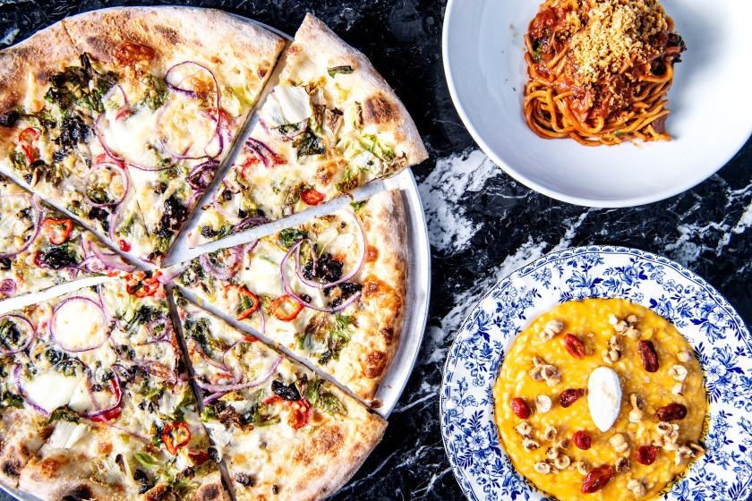
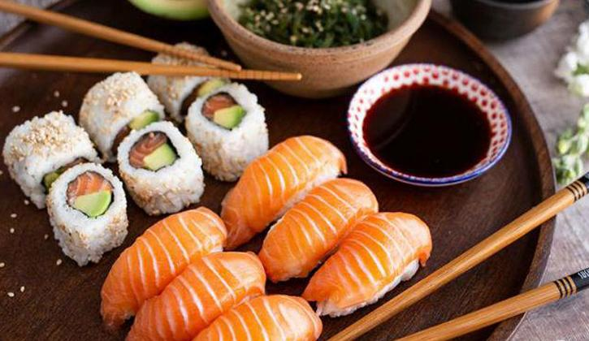

South Indian
Coconut is native to Southern India and spread to Europe, Arabia and Persia over the centuries. Coconut of Indian origin was brought to the Americas by Portuguese merchants.The similarities among the five states' cuisines include the presence of rice as a staple food, the use of lentils and spices, dried red chilies and fresh green chilies, coconut, and native fruits and vegetables including tamarind, plantain,jackfruit, snake gourd, garlic, and ginger.

italian
Italian cuisine has a great variety of different ingredients which are commonly used, ranging from fruits, vegetables, sauces, meats, etc. In the North of Italy, fish (such as cod, or baccalà), potatoes, rice, corn (maize), sausages, pork, and different types of cheeses are the most common ingredients.

chinese
Chinese cuisine is as diverse as their culture where every region writes up a new menu. ... The most prominent regional cuisines in China are Anhui, Cantonese, Fujian, Hunan, Jiangsu, Shandong, Szechuan, and Zhejiang. Cantonese cuisine is famous all over the world for its distinctive style.The most prominent regional cuisines in China are Anhui, Cantonese, Fujian, Hunan, Jiangsu, Shandong, Szechuan, and Zhejiang.

Korien
Korean cuisine is largely based on rice, vegetables, and (at least in the South) meats. Traditional Korean meals are named for the number of side dishes (반찬; 飯饌; banchan) that accompany steam-cooked short-grain rice. Kimchi is served at nearly every meal.
Korean cuisine is largely based on rice, vegetables, and (at least in the South) meats. Traditional Korean meals are named for the number of side dishes (반찬; 飯饌; banchan) that accompany steam-cooked short-grain rice. Kimchi is served at nearly every meal.
ABOUT
What’s the Foodwala Story?
What made Harsha, Nandan and Rahul build a platform that is Changing the way India eats?
Foodwala is a phoenix that rose out of Harsha & Nandan's earlier venture, Bundl Technologies. After a slow start, Foodwala snowballed into an unstoppable force that is now changing the way India eats. What happened along the way?